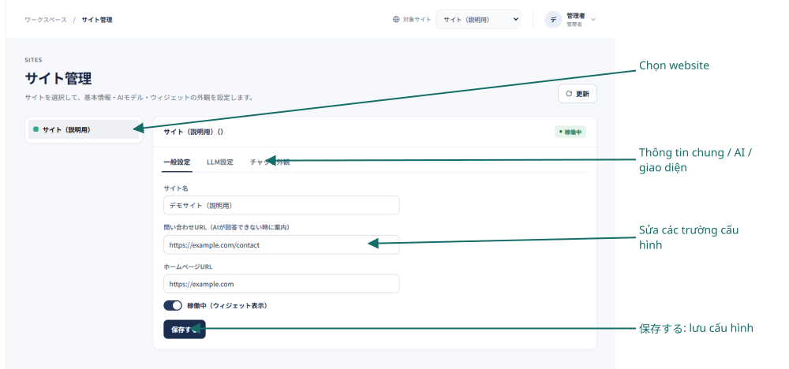

Mở đúng website
サイト管理 → chọn website → chọn tab → sửa thông tin → 保存する → 保存しました。
Thông tin chung — 一般設定
Sửa tên website, địa chỉ liên hệ, địa chỉ trang chủ và trạng thái hoạt động. Địa chỉ liên hệ được dùng khi chatbot hướng dẫn khách tìm người hỗ trợ. Trang chủ được dùng ở phản hồi chưa hữu ích.
Cách trả lời — LLM設定
Chọn mô hình AI đang có trên máy chạy Ollama. Nếu danh sách không tải được, kiểm tra Ollama và bấm tải lại; chỉ nhập tên thủ công khi biết mô hình đó đã được cài. Ô quy tắc riêng dùng để bổ sung cách xưng hô hoặc yêu cầu trả lời cho website.
Hình thức chat — チャット外観
Chọn màu giao diện và địa chỉ ảnh đại diện phù hợp. Dùng ảnh có thể truy cập từ trình duyệt của khách.
Lưu và kiểm tra
- Bấm 保存する trên màn hình cấu hình.
- Chờ thông báo 保存しました。.
- Mở ウィジェット確認 để kiểm tra; tải lại trang thử nếu cần.
Kết quả cần thấy
Thông tin và giao diện chat sử dụng cấu hình đã lưu. Tắt trạng thái hoạt động sẽ làm chat của website không còn phục vụ câu hỏi mới.